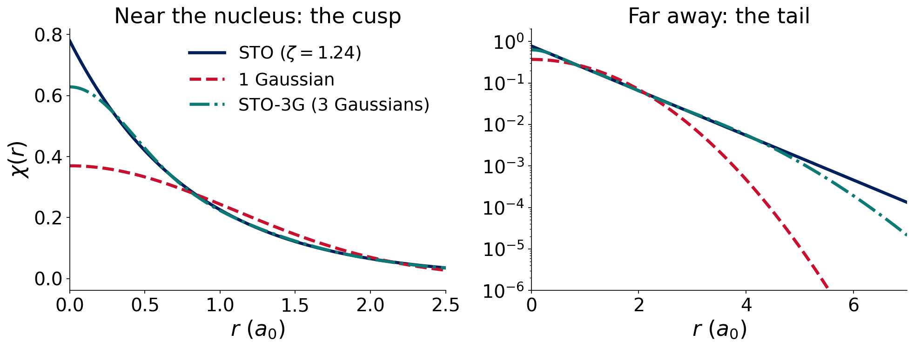
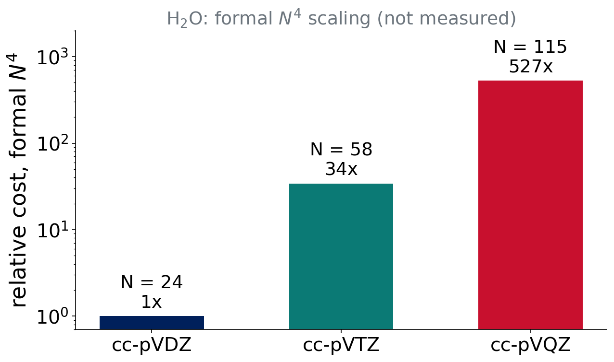

Lecture 2 · Approximating the wave function: basis sets
From orbitals to numbers: LCAO, Gaussians and basis-set families
Advanced Physical Chemistry · Florida Institute of Technology
LCAO
Last class
- Ĥ has five terms; Born–Oppenheimer gives \(E(\mathbf R)\)
- Ψ is built from orbitals φᵢ
- Variational principle: lower energy = better
Question for today: what functions do we use to write the orbitals?
Linear combination of atomic orbitals
\[ \phi_i(\mathbf r)=\sum_{\mu=1}^{K} c_{\mu i}\,\chi_\mu(\mathbf r) \]
- \(\chi_\mu\): basis functions (fixed, centered on atoms)
- \(c_{\mu i}\): coefficients (the computer finds them)
- \(K\): number of basis functions, printed in the Q-Chem output
A finite \(K\) is an approximation. Bigger \(K\) means a more flexible φ, so a lower energy.
pchem2: Bonds, Poly §13.1–13.2
Basis sets converge from above
Adding functions can only lower the energy (HF and DFT): the variational principle.
Infinite basis = complete basis set (CBS) limit.
The CBS energy is the best this method can do. Basis-set error is the distance to it.
Slater and Gaussian functions
Two kinds of radial function
Slater-type (STO)
\[\chi\propto e^{-\zeta r}\]
- Correct cusp at the nucleus
- Correct exponential tail
- Multicenter integrals are very hard
Gaussian-type (GTO)
\[\chi\propto e^{-\alpha r^2}\]
- Wrong: no cusp, tail too short
- Gaussian product theorem: product of two Gaussians is one Gaussian
- Integrals are fast
Hydrogen 1s: STO versus Gaussians

STO-3G parameters from the published basis set. One Gaussian is poor; three are good.
Contracted Gaussians
A contracted function is a fixed sum of primitive Gaussians:
\[ \chi_\mu=\sum_{k}d_{k}\,g_k(\mathbf r;\alpha_k) \]
- Coefficients \(d_k\) are fixed once, not optimized in the calculation
- Mimics one STO with cheap integrals
- STO-3G: 3 primitives per function (the minimal basis)
Cartesian versus spherical d
- Cartesian d: 6 functions (\(xx, yy, zz, xy, xz, yz\))
- Spherical d: 5 functions (the sixth is an s-like combination)
Each basis set is defined for one convention. Q-Chem uses the right one automatically. This is why published basis-function counts differ between programs.
Building better basis sets
Minimal to split-valence
- Minimal: one function per occupied atomic orbital (STO-3G)
- Split valence: two (double-ζ, “DZ”), three (TZ), four (QZ) functions per valence orbital
More than one valence function lets the orbital change size in a molecule.
Polarization functions
Add functions of higher angular momentum: d on C, N, O; p on H.
- A p orbital mixed with a little d is off-center and distorted
- Needed for bonds, lone pairs and almost every molecule
Polarization lets orbitals change shape.
Diffuse functions
Functions with very small exponents: slowly decaying, spread out.
- Anions and lone pairs
- Weak (noncovalent) interactions
- Excited, Rydberg-like states
Prefix aug- (Dunning) or + (Pople). They cost more and can cause SCF trouble.
Think–pair–share
Question (2 min)
You compute the dissociation of an anion, F⁻ + CH₃Cl. Which feature would you add first: more ζ, polarization or diffuse functions?
Diffuse functions: the extra electron is loosely bound and far from the nucleus. Then triple-ζ with polarization.
Pople basis sets
Reading a Pople name
6-31+G**
- 6-31: core = 6 primitives; valence split into 3 + 1 primitives (double-ζ)
- +: diffuse s,p on heavy atoms (++ also on H)
- G*: d on heavy atoms; G**: also p on H
Equivalent notation:
- 6-31G* = 6-31G(d)
- 6-31G** = 6-31G(d,p)
- 6-311G**: triple-ζ valence
Pople sets: know them, don’t love them
STO-3G, 3-21G, 6-31G, 6-31G*, 6-31+G*, 6-311G**
- Historical and still very common (Experiment 6 revisits 6-31G*)
- Unbalanced; not designed to converge systematically
- Hard to extend to the whole periodic table
Pople sets are fine to recognize, but we use modern, systematic families.
Modern families
Karlsruhe def2
def2-SVP, def2-TZVP, def2-QZVP
- Weigend & Ahlrichs 2005
- Almost the whole periodic table
- Effective core potentials for heavy elements (beyond Kr)
- Good accuracy per function for DFT
Weigend & Ahlrichs, Phys. Chem. Chem. Phys. 7, 3297 (2005)
Dunning correlation-consistent
cc-pVDZ, cc-pVTZ, cc-pVQZ, cc-pV5Z, and aug-cc-pVnZ
- Built so the correlation energy converges systematically with n
- Designed for wave-function methods (MP2, CCSD(T))
- aug-: diffuse functions added
- Also: Jensen’s pc-n, polarization-consistent, optimized for DFT
Dunning, J. Chem. Phys. 90, 1007 (1989); Woon & Dunning, J. Chem. Phys. 98, 1358 (1993); Jensen, J. Chem. Phys. 115, 9113 (2001)
Number of basis functions: H₂O
| Basis | Functions \(K\) |
|---|---|
| def2-SVP | 24 |
| def2-TZVP | 43 |
| cc-pVDZ | 24 |
| cc-pVTZ | 58 |
| cc-pVQZ | 115 |
| aug-cc-pVTZ | 92 |
Spherical functions. Check the number Q-Chem prints in your own output.
Think–pair–share
Question (2 min)
Same ζ level, two families: def2-SVP and cc-pVDZ have the same \(K\) for water. Does that mean they give the same energy?
No. Same size, different contents (exponents, contraction, polarization). Experiment 1 compares the two families.
The price of accuracy
Cost grows fast with K

- Formal scaling of HF and hybrid-DFT integrals: \(N^4\)
- Practical scaling is lower (screening, density fitting)
- You will measure the exponent in Experiment 1
Extrapolating to the CBS limit
Outlook (the Experiment 1 Colab notebook does this):
\[ E(n)=E_\mathrm{CBS}+A\,e^{-\alpha n}\quad(\text{HF}),\qquad E(n)=E_\mathrm{CBS}+\frac{A}{n^3}\quad(\text{correlation}) \]
Two kinds of basis-set error to remember:
- BSIE: incompleteness error (finite K)
- BSSE: superposition error (fragments “borrow” each other’s functions); returns in Lectures 8 and 10
Summary
More well-chosen functions: lower energy, systematic convergence to CBS, steeply higher cost.
Triple-ζ is the usual compromise.
- Decode names: ζ (size), polarization (shape), diffuse (reach)
- Families: Pople (historical), def2, cc-pVnZ, pc-n
Lecture 3: from theory to a calculation (IQmol and Q-Chem).
References
- Weigend & Ahlrichs, Phys. Chem. Chem. Phys. 7, 3297 (2005)
- Dunning, J. Chem. Phys. 90, 1007 (1989)
- Woon & Dunning, J. Chem. Phys. 98, 1358 (1993)
- Jensen, J. Chem. Phys. 115, 9113 (2001)
- P-Chem 2: peverati.github.io/pchem2 (Bonds, Poly)

CHM 5111 · Advanced Physical Chemistry · Florida Institute of Technology